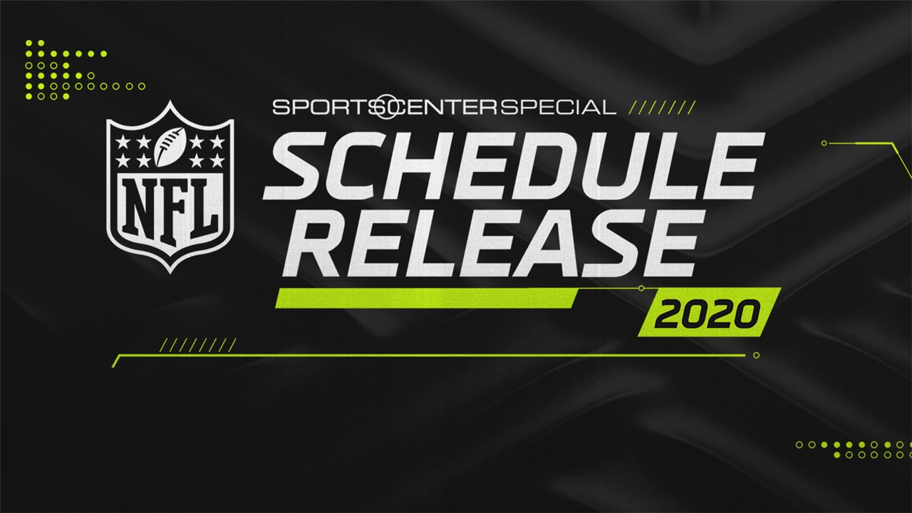
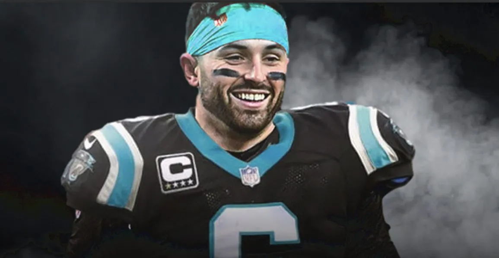

Temporada terá mais uma vez 18 semanas, com direito a cinco jogos internacionais; Veja os destaques da
Semana 01!
A NFL revelou, nesta quinta-feira (12), o calendário completo para sua temporada 2022. Mais uma vez, o calendário regular possui 18 semanas, começando no dia 8 de setembro, uma quinta, em confronto protagonizado pelo atual campeão, Los Angeles Rams, e o Buffalo Bills, uma das sensações das últimas temporadas, no SoFi Stadium.

Já na semana 1, um dos confrontos mais esperados da temporada: o reencontro de Russell Wilson com o Seattle Seahawks, no primeiro Monday Night Football. A partida será disputada em um Lumen Field lotado para rever o quarterback que levou os Hawks a dois Super Bowls consecutivos, em 2013 e 2014.
No primeiro Sunday Night Football, haverá a repetição da partida que abriu a temporada passada, entre Dallas Cowboys e Tampa Bay Buccaneers. Mais um jogo do horário nobre de domingo sob os holofotes será entre os mesmos Buccaneers e Kansas City Chiefs, reeditando o embate no Super Bowl LV vencido por Tom Brady e sua trupe – revanche para Patrick Mahomes e companhia?
Fim da novela: Baker tentará salvar carreira nos Panthers
Quarterback foi trocado por uma escolha de dia 3 do Draft de 2024 - o famoso preço de banana - e tem a última chance de provar que é um titular de qualidade na liga
pós muitos boatos, Baker Mayfield tem novo time para 2022: o quarterback foi trocado para o Carolina Panthers por uma escolha condicional de quinta rodada do Draft de 2024. Segundo informações do insider Mike Garafolo, Mayfield terá um peso de US$ 5 milhões na folha dos Panthers neste, um valor baixo para um titular.Já na folha dos Browns, seu custo será de US$ 10,5 milhões, sendo que a franquia abriu US$ 8 milhões extras com a troca. Para facilitar a troca, o quarterback ainda abriu mão de receber US$ 3,5 milhões. Trata-se do famoso acordo “win-win”: todo mundo cede um pouco e sai feliz.

Já na semana 1, um dos confrontos mais esperados da temporada: o reencontro de Russell Wilson com o Seattle Seahawks, no primeiro Monday Night Football. A partida será disputada em um Lumen Field lotado para rever o quarterback que levou os Hawks a dois Super Bowls consecutivos, em 2013 e 2014.
No primeiro Sunday Night Football, haverá a repetição da partida que abriu a temporada passada, entre Dallas Cowboys e Tampa Bay Buccaneers. Mais um jogo do horário nobre de domingo sob os holofotes será entre os mesmos Buccaneers e Kansas City Chiefs, reeditando o embate no Super Bowl LV vencido por Tom Brady e sua trupe – revanche para Patrick Mahomes e companhia?